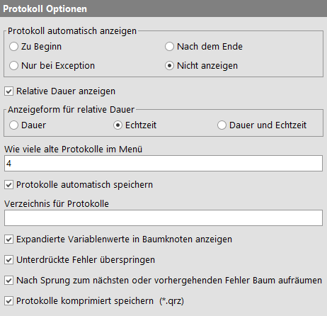
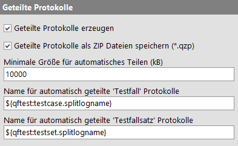
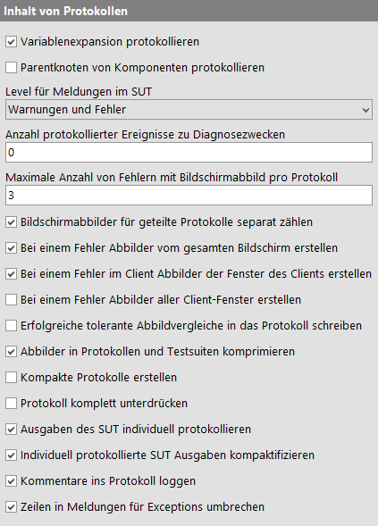
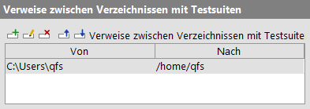

| Version 6.0.3 |
Die folgenden Optionen haben Einfluss darauf, welche Informationen in einem Protokoll aufgezeichnet werden, wann dieses angezeigt und wie es gespeichert wird.
|
|  | ||
|
| Abbildung 37.34: Protokoll Optionen | ||
Hier lässt sich einstellen, ob und unter welchen Bedingungen das Protokoll, das für jeden Testlauf erzeugt wird, angezeigt werden soll. Die Protokolle der letzten Testläufe sind in jedem Fall über das Menü »Wiedergabe« abrufbar. Die Tastenkombination [Strg-L] ruft das jeweils letzte Protokoll ab.
Zu Beginn
Legt fest, dass das Protokoll bereits beim Start eines
Testlaufs angezeigt wird.
Nach dem Ende
Bei dieser Einstellung wird das Protokoll angezeigt, nachdem
ein Testlauf beendet ist.
Nur bei Exception
In diesem Fall wird das Protokoll nur angezeigt, wenn ein
Testlauf durch eine Exception abgebrochen wird.
Nicht anzeigen
Hier wird das
Protokoll nicht automatisch angezeigt, ist aber dennoch über
das »Wiedergabe« Menü oder mittels
[Strg-L].
zugänglich.
Um das Laufzeitverhalten eines Tests zu analysieren hilft ein schneller Blick darauf, in welchen Zweigen die meiste Zeit verbracht wird. Zu diesem Zweck kann über diese Option die Anzeige der relativen Dauer im Protokoll aktiviert werden. Die Option ist auch direkt über das »Anzeige« Menü im Protokoll zugänglich.
Die Länge der angezeigten Balken entspricht dem relativen Anteil der Dauer des Knotens an der Dauer seines Parentknotens.
Über diese Option wird festgelegt, ob sich die Anzeige der relativen Dauer im Protokoll auf die Dauer, die Echtzeit oder beides bezieht.
HinweisUnterschiede zwischen den Werten "Dauer" und "Echtzeit" entstehen zum Beispiel durch explizite Verzögerungen in Knoten mittels 'Verzögerung vorher/nachher' oder bei Unterbrechungen durch den Benutzer.
Hier können Sie einstellen, wie viele Protokolle im »Wiedergabe« Menü aufgehoben werden sollen. Werden mehr Testläufe durchgeführt als Protokolle aufgehoben werden sollen, werden die jeweils ältesten Protokolle verworfen. Sofern sie nicht gespeichert wurden, sind sie damit unwiederbringlich verloren.
Um übermäßigen Speicherverbrauch zu vermeiden und außerdem die letzten Protokolle zwischen verschiedenen QF-Test Sessions persistent zu machen, werden die aktuellen Protokolle im »Wiedergabe« Menü automatisch im benutzerspezifischen Konfigurationsverzeichnis gespeichert, bzw. in dem Verzeichnis, das in der Option Verzeichnis für Protokolle spezifiziert wurde. Der Dateiname für ein Protokoll wird aus einem Zeitstempel gebildet. QF-Test sperrt diese Dateien, um Konflikte und versehentliches Löschen bei mehreren parallelen QF-Test Sessions zu vermeiden und hält das benutzerspezifische Konfigurationsverzeichnis durch regelmäßiges Löschen der unbenutzten Protokolle sauber. Es sollte also keinen Grund geben, diese Funktion auszuschalten, aber wenn Sie darauf bestehen, können Sie es mittels dieser Option tun.
Standardmäßig werden bei interaktiver Ausführung von QF-Test Protokolle im benutzerspezifischen Konfigurationsverzeichnis. Mit dieser Option können Sie ein alternatives Zielverzeichnis angeben.
Hinweis Diese Option wird von QF-Test bei jedem Start eines Tests ausgewertet. Zu diesem Zeitpunkt sind globale Variablen und Variablen der Testsuite bereits definiert und im Gegensatz zu andere Option darf hier die QF-Test Variablensyntax verwendet werden, einschließlich spezieller Variablen wie ${env:HOME} um Environmentvariablen auszuwerten oder sogar ${qftest:suite.dir} um das Protokoll neben der Testsuite abzulegen. Falls das Verzeichnis, wie im letzten Fall, dynamisch ist, kann QF-Test eventuell alte Protokolle nicht regelmäßig aufräumen. Fehler bei der Expansion von Variablen werden ohne Meldung ignoriert und das benutzerspezifische Konfigurationsverzeichnis stattdessen verwendet.
Die Knoten der Baumansicht eines Protokolls können entweder mit expandierten Variablen - mit Werten vom Zeitpunkt der Ausführung - dargestellt werden, oder mit den Variablen selbst. Beide Ansichten sind nützlich, daher können Sie mittels dieser Option, oder einfacher über den Menüeintrag »Ansicht«-»Knoten expandiert darstellen«, zwischen ihnen wechseln.
Wie die vorhergehende, bezieht sich auch diese Option auf die Suche nach Fehlern im Protokoll. Ist sie aktiviert, werden nur solche Warnungen, Fehler oder Exceptions gefunden, die im Protokoll nach oben durchgereicht wurden. Exceptions, die durch ein 'Try'/'Catch' Konstrukt abgefangen oder Meldungen, die durch das 'Maximaler Fehler' Attribut unterdrückt wurden, werden übersprungen.
Diese Option kann sowohl über den Optionen Dialog, als auch direkt über den Menüeintrag »Bearbeiten«-»Unterdrückte Fehler überspringen« verändert werden.
Werden mehrfach Fehler in einem Protokoll angesprungen, kann dieses leicht durch die vielen expandierten Knoten unübersichtlich werden. Ist diese Option aktiviert, räumt QF-Test automatisch nach jedem Sprung zu einem Fehler den Baum auf, so dass nur die Parent-Knoten des aktuellen Fehlers expandiert sind.
Hinweis Beim Bearbeiten von geteilten Protokollen werden Teil-Protokolle, die einen Fehler enthalten, so lange im Speicher gehalten wie ihre Knoten expandiert sind. Durch Aktivieren dieser Option können Sie sicherstellen, dass Teil-Protokolle so bald wie möglich freigegeben werden und der Speicherverbrauch auch beim Betrachten der Fehler eines sehr großen Protokolls im Rahmen bleibt.
Protokolle können als normale oder als komprimierte XML Datei gespeichert werden.
Für große Protokolle ohne Bildschirmabbilder kann der Kompressionsfaktor durchaus
10 und mehr betragen, so dass es ratsam ist, Kompression zu verwenden. Das einzige
Argument dagegen ist, wenn Sie die XML Protokolle nachträglich transformieren
wollen. Da QF-Test aber den Standard gzip Algorithmus zur Kompression verwendet,
können komprimierte und normale Protokolle jederzeit mittels gzip
ineinander umgewandelt werden.
Wenn Sie ein Protokoll interaktiv speichern, können Sie jederzeit über die
Kompression entscheiden indem Sie im Dialog den entsprechenden Filter auswählen
oder der Datei die Entsprechende Endung .qrl oder .qrz
geben.
Im Batch Modus werden Protokolle normalerweise komprimiert geschrieben. Um ein
unkomprimiertes Protokoll zu erstellen geben Sie einfach mit dem
Kommandozeilenargument -runlog [<Datei>] eine Datei mit der Endung .qrl
an.
|
|  | ||
|
| Abbildung 37.35: Optionen zur Aufteilung von Protokollen | ||
Ein Protokoll kann durch setzen des Attributs 'Name für separates Protokoll' eines 'Datentreiber' Knotens oder eines der verschiedenen Test Knoten in mehrere Teile zerlegt werden. Sie können diese Funktion deaktivieren, indem Sie diese Option ausschalten. So müssen Sie keine 'Name für separates Protokoll' Attribute ändern, wenn Sie zwischendurch ein komplettes Protokoll erstellen wollen.
Weitere Informationen zu geteilten Protokollen finden Sie in Abschnitt 7.1.5.
Geteilte Protokolle können entweder als einzelne ZIP Datei mit der Endung
.qzp gespeichert werden, die das Hauptprotokoll und alle davon
abgeteilten Protokolle enthält, oder als normales .qrl oder
.qrz Protokoll. Letzteres wird um ein Verzeichnis mit dem selben
Basisnamen und dem Anhang _logs ergänzt, welches die abgeteilten
Protokolle aufnimmt, z.B. die Datei runlog.qrz plus das Verzeichnis
runlog_logs. Diese Option legt das Format fest, mit dem Protokolle
automatisch im interaktiven Modus geschrieben werden. Wird die Option Protokolle automatisch speichern ausgeschaltet, ist diese Option ohne Bedeutung.
Weitere Informationen zu geteilten Protokollen finden Sie in Abschnitt 7.1.5.
Hinweis Diese Option findet nur für 'Testfall' und 'Testfallsatz' Knoten Anwendung. An anderen Stellen werden Protokolle nur bei expliziter Angabe von 'Name für separates Protokoll' geteilt.
Geteilte Protokolle sind der einzig sichere Weg um zu vermeiden, dass bei sehr lang laufenenden Tests oder bei vielen Bildschirmabbildern oder großen Ausgaben vom SUT der Speicher ausgeht. Zudem ist die Transformation in Reports bei geteilten Protokollen effizienter. Das explizite Setzen von 'Name für separates Protokoll' Attributen erfordert allerdings eine Kenntnis der Thematik und Entscheidungen, wo ein Protokoll am besten aufgeteilt wird oder führt zu ermüdender Tipparbeit beim Versuch einer feinen Unterteilung.
Als Kompromiss berechnet QF-Test sehr grob die Größe des Protokolls bei der Ausführung und bezieht dabei die Größe von Bildschirmabbildern und Programmausgaben mit ein. Immer wenn bei der Testausführung ein 'Testfall' oder 'Testfallsatz' abgeschlossen ist und die ungefähre Größe des zum Knoten gehörigen Protokolls den in dieser Option angegebenen Schwellwert überschreitet, wird das Teil-Protokoll abgetrennt und separat gespeichert. Ein Wert von 0 verhindert das automatische Teilen.
Weitere Informationen zu geteilten Protokollen finden Sie in Abschnitt 7.1.5.
Diese Option bestimmt den Namen für ein separates Protokoll, das in Abhängigkeit von der vorhergehenden Option nach Ausführung eines Testfalls geschrieben wird. Variablen können ebenso verwendet werden wie die '%...' Platzhalter, die beim Attribut 'Name für separates Protokoll' beschrieben sind.
Die spezielle Variable ${qftest:testcase.splitlogname} ist eine gute Basis. Sie wird zu einem Pfadnamen expandiert, der aus den Namen des 'Testfall' Knotens und eventuellen 'Testfallsatz' Parentknoten als Verzeichnissen besteht.
Weitere Informationen zu geteilten Protokollen finden Sie in Abschnitt 7.1.5.
Diese Option bestimmt den Namen für ein separates Protokoll, das in Abhängigkeit von der Option Minimale Größe für automatisches Teilen (kB) nach Ausführung eines Testfalls geschrieben wird. Variablen können ebenso verwendet werden wie die '%...' Platzhalter, die beim Attribut 'Name für separates Protokoll' beschrieben sind.
Die spezielle Variable ${qftest:testset.splitlogname} ist eine gute Basis. Sie wird zu einem Pfadnamen expandiert, der aus den Namen des 'Testfallsatz' Knotens und eventuellen 'Testfallsatz' Parentknoten als Verzeichnissen besteht.
Weitere Informationen zu geteilten Protokollen finden Sie in Abschnitt 7.1.5.
|
|  | ||
|
| Abbildung 37.36: Optionen für den Inhalt von Protokollen | ||
Ist diese Option gesetzt, wird im Protokoll jedes mal, wenn für ein Attribut mit variablem Inhalt die Variablenwerte eingesetzt werden, eine Meldung erstellt.
Für jeden Event, Check etc. wird die Zielkomponente im Protokoll gespeichert. Das Setzen dieser Option bewirkt, dass dabei zusätzlich alle direkten und indirekten Parentknoten der Komponente mitgespeichert werden.
Während des Ablaufs eines Test werden im SUT Meldungen mit verschiedener
Bedeutung automatisch generiert, z.B. zur Analyse der Wiedererkennung der
Komponenten. Diese Option legt fest, welche davon im Protokoll ankommen: Alle
Meldungen, Warnungen und Fehlermeldungen oder nur Fehlermeldungen. Auf explizit
mit rc.logMessage oder qf.logMessage erstellte Meldungen
hat diese Option keinen Einfluss.
Beim Abspielen eines Tests zeichnet QF-Test im SUT Events und andere interne Vorgänge auf. Diese Informationen werden normalerweise schnell wieder verworfen, außer im Fall eines Fehlers. Dann werden sie in einen Speziellen Knoten im Protokoll geschrieben. Diese Informationen können zwar auch für Entwickler von Interesse sein, dienen aber in erster Linie zur Fehlerdiagnose, wenn Support von Quality First Software GmbH angefordert wird.
Diese Option legt die Zahl der Ereignisse fest, die QF-Test zwischenspeichert. Ein Wert von 0 schaltet dieses Feature komplett aus. Sie sollten den Wert aber nicht ohne guten Grund auf weniger als ca. 400 reduzieren. Da die Informationen nur im Fehlerfall ausgegeben werden, ist der Aufwand für ihre Erstellung vernachlässigbar.
Die Zahl der Bildschirmabbilder, die QF-Test während eines Testlaufs aufnimmt und im Protokoll speichert, kann mit dieser Option limitiert werden, um den Speicherverbrauch zu begrenzen. Ein Wert von 0 schaltet Bildschirmabbilder komplett aus, ein negativer Wert bedeutet unbegrenzte Bildschirmabbilder.
Ist diese Option gesetzt, kann jeder Teil eines geteilten Protokolls das oben angegeben Maximum an Bildschirmabbilder enthalten, ohne die Bildschirmabbilder für das Hauptprotokoll zu beeinflussen. Andernfalls gilt das Maximum für alle Teile zusammen.
Weitere Information zu geteilten Protokollen finden Sie in Abschnitt 7.1.5.
Das Aktivieren dieser Option veranlasst QF-Test ein Abbild des gesamten Bildschirms zu generieren und im Protokoll zu speichern, wenn dies aufgrund einer Exception oder eines Fehlers während des Testlaufs angestoßen wird.
Wenn mehrere Monitore angeschlossen sind, ist es nicht immer sinnvoll, Abbilder von allen Bildschirmen zu nehmen. Insbesondere beim Arbeiten im interaktiven Modus auf dem eigenen Rechner können gelangen sonst leicht private oder vertrauliche Informationen in das Protokoll.
Ist diese Option aktiviert, was standardmäßig der Fall ist, versucht QF-Test die Bildschirme zu identifizieren, auf denen ein Fenster des SUT oder die QF-Test Workbench zu sehen sind und ignoriert den Rest.
Ist diese Option gesetzt, generiert QF-Test während der Testausführung Abbilder von allen Fenster des SUT, von dem eine Exception oder ein Fehler ausgelöst wird und speichert diese im Protokoll. Dies funktioniert oft auch in Situationen, wo ein Fenster von einem anderen Fenster überdeckt wird oder für Fälle, in denen ein Abbild des gesamten Bildschirms nicht möglich ist, z.B. wenn der Bildschirm gesperrt ist.
Ist diese Option aktiviert werden Abbilder von allen Fenstern aller verbundener SUTs im Protokoll gespeichert, unabhängig von der Quelle der auslösenden Exception bzw. des Fehlers. Diese Option beeinflusst auch, welche Bildschirme, abhängig von den SUT Fenstern, als relevant betrachtet werden.
Ist diese Option aktiviert, werden auch dann Abbilder erstellt, wenn Warnungen im Protokoll gespeichert werden. Andernfalls geschieht dies nur bei Fehlern und Exceptions.
Ist diese Option gesetzt, werden auch bei erfolgreichem Abbildvergleich bei Verwendung von toleranten Imagevergleichen die Ergebnisse des Algorithmus inklusive der transformierten Bilder in das Protokoll geschrieben. Andernfalls werden diese Details nur bei fehlgeschlagenem Vergleich gespeichert.
Diese Option kann den Speicherverbrauch des Protokolls drastisch erhöhen, daher sollten Sie sie auf jeden Fall mit kompakten und/oder geteilten Protokollen kombinieren.
Ist diese Option gesetzt, so werden neu erzeugte Abbilder von Komponenten und Bildschirmabbilder in Protokollen und Run-Logs verlustfrei komprimiert gespeichert.
Diese Option kann den Speicherverbrauch des Protokolls und von Test-Suiten auf dem Datenträger und im Hauptspeicher signifikant senken. Allerdings benötigt das Komprimieren und Dekomprimieren der Grafiken etwas Rechenzeit, so dass die Option bei sehr zeitkritischen Ausführungen deaktiviert werden kann.
Ist diese Option aktiviert, verwirft QF-Test alle Knoten eines Protokolls, die weder für die Fehlerdiagnose, noch für den XML/HTML Report benötigt werden. Nach einem Fehler oder einer Exception, sowie am Ende eines Testlaufs, bleiben die zuletzt ausgeführten 100 Knoten im Protokoll erhalten, so dass die wichtigsten Informationen erhalten bleiben sollten.
Selbst größere Tests sollten keine Speicherprobleme auslösen, sofern die Option Geteilte Protokolle erzeugen aktiviert ist und wie in Geteilte Protokolle beschrieben verwendet wird. Wenn der Speicherbedarf dennoch zu groß wird, kann diese Option helfen, ihn deutlich zu reduzieren.
Diese Option wird nur ausgewertet, wenn QF-Test im interaktiven
Modus ausgeführt wird. Im Batchmodus (vgl. Abschnitt 1.7) wird die Option ignoriert, um
versehentlichen Informationsverlust zu vermeiden. Kompakte
Protokolle können im Batchmodus über die Kommandozeilenoption
-compact aktiviert werden.
Für besonders lang laufende Tests oder Demos kann der Speicherverbrauch von Protokollen ein Problem darstellen, welchem nun mit geteilten Protokollen beizukommen ist. Bevor es geteilte Protokolle gab, stellte diese Option die letzte Möglichkeit dar, besonders lang laufende Tests durchzuführen. Nun ist sie nur noch aus Gründen der Rückwärtskompatibilität vorhanden.
Hinweis Im Batchmodus wird diese Option ignoriert, stattdessen
kann dort durch die Angabe von -nolog das Protokoll unterdrückt werden.
Ist diese Option gesetzt, werden alle Ausgaben eines SUT Clients auf seine stdout oder stderr Streams auch individuell im Protokoll abgelegt. Für jede Interaktion mit dem SUT sammelt QF-Test dabei den vorher angefallenen Text, sowie den während der Event Synchronisation ausgegebenen Text. Hierdurch können Ausgaben wie z.B. ein Exception StackTrace direkt mit dem Knoten assoziiert werden, der diese ausgelöst hat. Dies ist nahezu unmöglich, wenn alle Ausgaben nur in einem großen Block vorhanden sind.
Ausgaben eines SUT Clients können, wenn sie gehäuft auftreten, signifikante Mengen an Speicher verbrauchen. Ist diese Option aktiviert, werden individuell protokollierte Ausgaben zusammen mit dem auslösenden Knoten aus einem kompakten Protokoll entfernt, sofern dieser Knoten nicht weiter interessant ist. Nähere Informationen zu kompakten Protokollen finden Sie bei der Option Kompakte Protokolle erstellen.
Ist diese Option aktiviert, werden 'Kommentar' Knoten in das Protokoll übernommen.
Meldungen für Exceptions im Protokoll oder in Fehlerdialogen werden an Wortgrenzen umgebrochen, sofern diese Option aktiviert ist.
|
|  | ||
|
| Abbildung 37.37: Optionen für Verweise zwischen Verzeichnissen mit Testsuiten | ||
Beim Analysieren eines Protokolls ist es oft hilfreich, schnell zwischen dem Protokoll und der zugehörigen Testsuite hin- und herwechseln zu können. Werden automatisierte Tests allerdings auf verschiedenen Systemen ausgeführt, z.B. Windows und Linux, unterscheiden sich die Verzeichnisse, aus denen die Testsuiten für den Test geladen werden. QF-Test kann verschiedene Verzeichnisstrukturen aufeinander abbilden, wenn Sie es dabei mit Hilfe dieser Option unterstützen.
Die 'Von'-Spalte ist ein Muser, das vom Beginn des Pfads der Testsuite bis zum Ende eines Verzeichnisses mit diesem Pfad übereinstimmen muss. Die 'Nach'-Spalte ist die Ersetzung für den übereinstimmenden Teil, die ebenfalls Muster enthalten kann. Bei der Suche nach der referenzierten Testsuite arbeitet QF-Test diese Liste von oben nach unten ab, führt die Ersetzung im Fall einer Übereinstimmung aus und der erste Treffer, der zu einer existierenden Testsuite führt, wird verwendet.
Hinweis Die hier verwendeten Muster sind keine regulären Ausdrücke, sondern eine einfachere Form, die oft in Entwicklungswerzeugen eingesetzt wird. Ein '*' steht für 0 oder mehr Zeichen exklusive '/', '**' für 0 oder mehr beliebige Zeichen inklusive '/'. Einige Beispiele:
**/Testsuiten
Testsuiten in beliebiger Tiefe.T:/Test/SUT_*
SUT_ im Verzeichnis
T:/Test
| Letzte Änderung: 6.9.2022 Copyright © 1999-2022 Quality First Software GmbH |